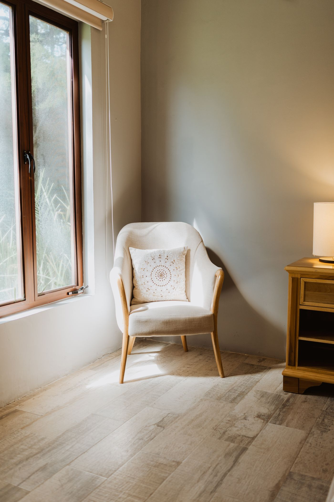
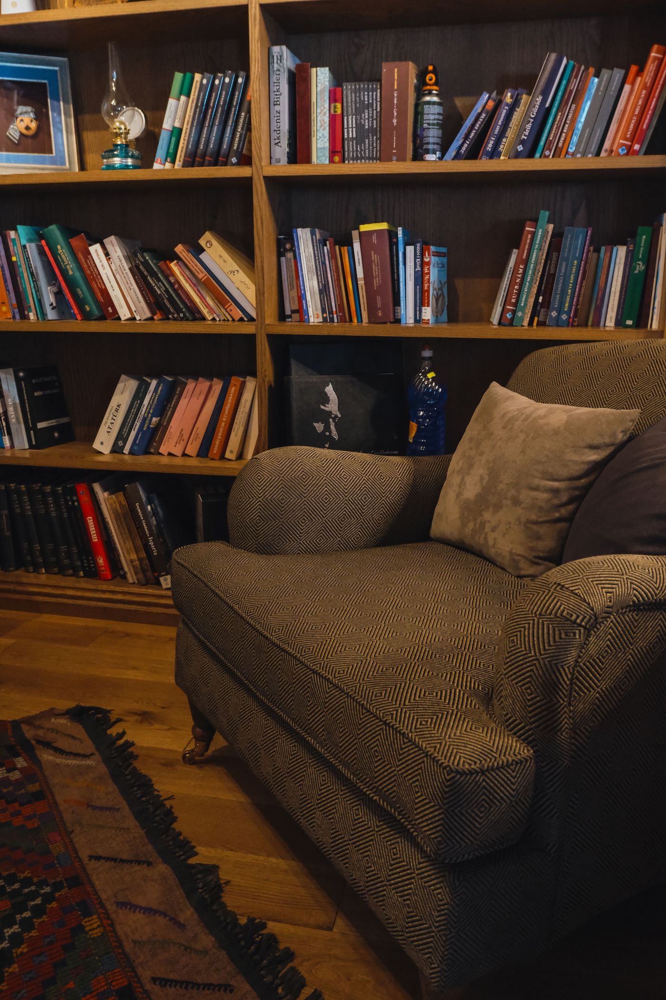

Terapia individual
Um espaço para entender emoções, escolhas e relações.

Atendimento psicológico acolhedor, com sigilo e respeito ao seu tempo, presencial ou online.
É um primeiro encontro para você se sentir à vontade e entender como funciona.
Chame no WhatsApp, tire dúvidas e escolha o melhor horário.
Na primeira sessão, você apresenta o que o traz e conhece o formato do processo.
Sessões regulares, no ritmo combinado entre vocês.
Sigilo e respeito. Tudo o que é conversado fica entre você e o profissional.
Cada processo é construído em conjunto, no seu ritmo.
Um espaço para entender emoções, escolhas e relações.
Acompanhamento para lidar com a sobrecarga do dia a dia.
Apoio para melhorar a comunicação e os vínculos.
Escuta atenta para as questões dessa fase da vida.
Apoio a pais e responsáveis na criação e nos limites.
A mesma qualidade de escuta, onde você estiver.

Dra. Júlia Mendes oferece uma escuta cuidadosa, ética e sem julgamentos.
O processo é construído com você, respeitando a sua história e o seu tempo.
É um momento de acolhimento: você conta o que o trouxe e conhece como será o acompanhamento.
Sim. O sigilo é um princípio ético da profissão.
Sim, por videochamada, com a mesma qualidade de escuta.
Varia de pessoa para pessoa e é definido junto com você ao longo do acompanhamento.
Sim. Conte a idade no agendamento para orientarmos o melhor formato.
Agende uma primeira conversa pelo WhatsApp. Leva menos de um minuto.
Escolha uma opção. Você confirma os detalhes no atendimento.
Usamos apenas para entrar em contato sobre o seu agendamento.
Confirmamos o horário exato pelo WhatsApp.